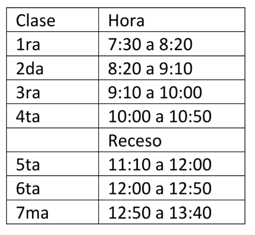
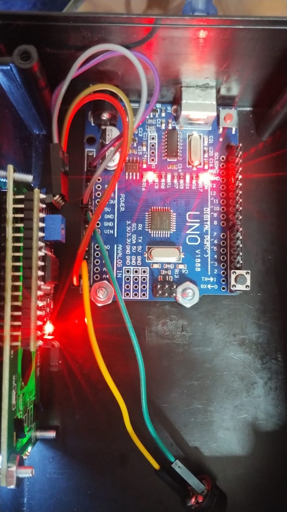
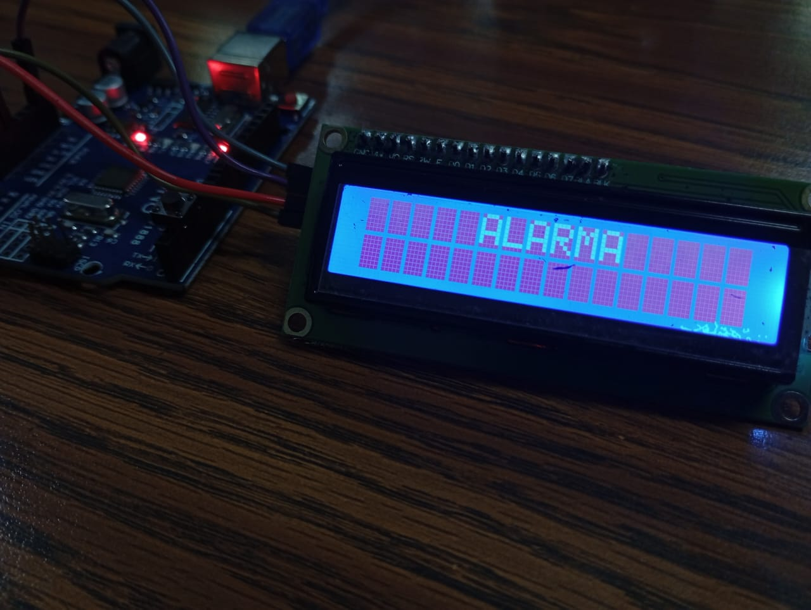

¿Cómo Funciona el Sistema?
| Paso | Proceso | Descripción | Imagen |
|---|---|---|---|
| 1 | Lectura de Hora | El Arduino consulta continuamente la fecha y hora actual para verificar los horarios programados. |

|
| 2 | Comparación de Horarios | El programa compara la hora actual con los horarios almacenados para determinar si debe activarse el timbre. |
 |
| 3 | Activación del Buzzer | Cuando la hora coincide con un horario establecido, el buzzer emite una señal sonora indicando un cambio de actividad. |
 |
| 4 | Visualización de Datos | La pantalla LCD muestra la fecha, la hora y mensajes relacionados con el estado del sistema. |
 |
| 5 | Mensajes del Sistema | Una caja de texto programada muestra información importante y el estado actual del sistema. |

|
Descripción General
El sistema de timbre escolar programado funciona mediante la lectura constante de la hora actual. Cuando el reloj alcanza alguno de los horarios previamente configurados, el Arduino activa automáticamente el buzzer para indicar entradas, cambios de clase, recreos o salidas.
La pantalla LCD permite visualizar información en tiempo real, mientras que el pulsador facilita la realización de pruebas y ajustes del sistema. Gracias a esta automatización, se mejora la organización y puntualidad dentro de la institución educativa.